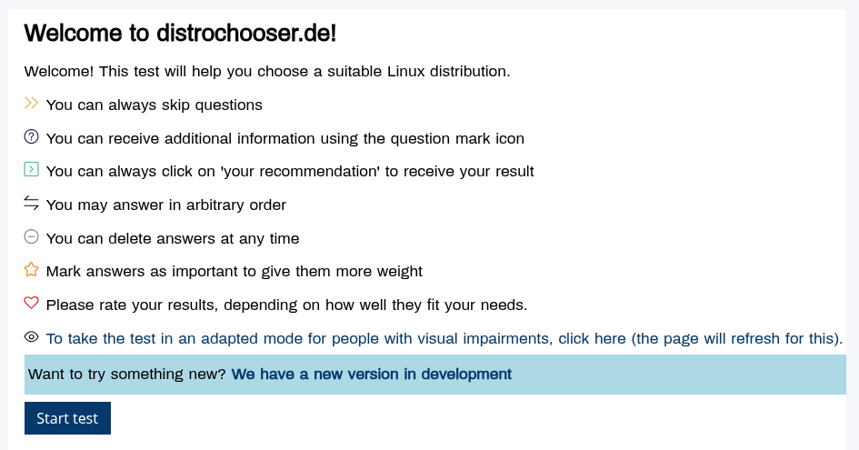
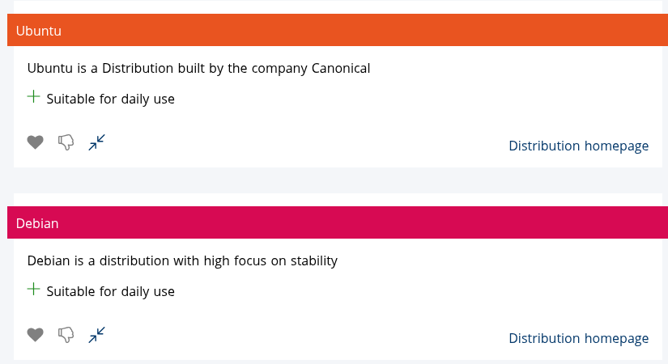

Not sure which Linux distro to try? Start with Distrochooser
Linux has many distributions, and choosing one can be confusing. Distrochooser turns your preferences into a list of suggestions, with reasons and links to the distributions' own websites. Use it to build a shortlist, not to hand over the final decision.

What does it ask?
The questionnaire covers everyday use, computer and Linux experience, installation preferences, hardware, help sources, user experience, distribution cost, software scope, free-software preferences, privacy, administration and software updates.
You can skip questions, answer in a different order, change answers and mark priorities as important. The welcome page explains these controls. More thoughtful answers give the tool more of your preferences to work with; they do not turn the result into a guarantee.
How to use it
- Open distrochooser.de and choose your language. We used English.
- Press Start test. Answer for the computer and tasks you actually have in mind. Skip anything you do not understand rather than guessing.
- Use the question-mark help where offered. Mark an answer important when that requirement really matters to you.
- Choose Show your results. Read the reasons, not just the first distribution name.
- Follow a result's Distribution homepage link. Check current hardware requirements, supported software and installation guidance there before deciding.
Our small functional test
We selected daily use and a good-performing computer with 64-bit support, leaving other preferences unanswered. The results included Ubuntu, Debian and other distributions, with a daily-use match reason and official-homepage links. These are examples returned by that sample, not our recommendation to every beginner.
An earlier hardware-only sample returned no suitable result. The daily-use answer then produced suggestions. That is another reason to treat this as a preference guide rather than a diagnostic tool.

Free? Account needed? Which languages?
No payment, card, email address or account was requested in our questionnaire-to-results test. We did not test every feature or a separate development version.
The live language selector offered 19 choices, including English, German, French and Spanish. Malayalam and Hindi were not listed in the selector we checked. Translation completeness can vary: we also saw one German notice inside the English results page.
Is it open source?
The project publishes its source code, but the official about page makes an important distinction: its underlying questionnaire structure, result matrix and statistics are proprietary. Do not describe the entire service and all its data as open source.
Code licences depend on the branch: the repository's production branch, viisi, has an MPL 2.0 licence; the development main branch has AGPL v3. Check the relevant LICENSE file before reusing code. Neither licence makes the proprietary database freely reusable.
Privacy: no account does not mean no data
The official privacy policy, served in German when checked, lists questionnaire results and feedback, as well as visit time and device/user-agent information, among processed data. The results screen generated a shareable result link. Its feedback box says text is saved automatically.
Do not put personal or sensitive details into feedback. Treat a result link as something others may be able to open. We did not audit the service's storage, tracking, security or retention in practice, and do not claim that it works entirely offline or keeps answers only on your device.
A shortlist, not a promise
The project's own about page says results are suggestions based on answers and may fit imperfectly because answers interact. Its repository also warns that it cannot calculate 100% accurate results. A quiz result is not a hardware scan, an installation approval or proof that every app you need will work.
Before changing your computer, check the chosen distribution's official documentation, back up your files and consider its supported live-testing option where available. This post does not provide installation instructions. We did not install or benchmark any distribution.